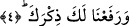
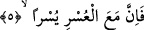

işlemekten masum olduğunun ve kirlerden arınmış ve temiz olduğunun kinâye yoluyla
anlatımı olmuş olur. Bu ifâde bu haliyle hiç ziyaret yapmamış olan bir kimseye birisinin
“ziyaret meşakkatini senden kaldırdık” demesine benzer. Böylece o kişinin ziyaret
yapmamış olması mubalağa ve abartı yoluyla vurgulanmış olur. İşte Peygamber
Efendimiz’e bu sûrede yapılan hitabı bu örnek cümledeki hitab gibi almak mümkündür.
4. Senin şânını yüceltmedik mi?
Yani peygamberlik sıfatıyla ve onun getirmiş olduğu bazı ayrıcalıklarla senin şânını
yüceltmedik mi? denmiş olmaktadır. Bir başka ifâdeyle Allah Teâlâ onun ismini kelime-
i şahâdet, ezan ve kamette kendi ismiyle birlikte yanyana kılarak yüceltmiştir. Nitekim
şair Hassan b. Sabit (r.a.) bu gerçeği beyitlerinde şu şekilde dile getirir:
Ne eylerse hoş eyler, omuzunda mührü,
Vuran Allah, hem meşhur hem de zâhir
Eklemiş Allah, ismini ismine, her dâim
Baksana ezana... şâhid buna eşhedu.
Allah Teâlâ Peygambere (s.a.) itâatı kendine itâat olarak kabul etmiş, Peygamber
Efendimiz’in (s.a.) üzerine kendisi ve melekler salatu selam getirmişler, ayrıca Allah
mü’minlere de peygamberine salat-u selam getirmeyi emretmiştir. Bunun yanında
Peygamber Efendimiz’e (s.a.) “resulullah”, “nebiyyullah” gibi ve bunun dışında buna
benzer onu şereflendiren başka sıfatlar vermiştir.
Zunnûn Mısrî (k.s.) buyurmuştur ki; “rifat-i zikr”, yâni âyette geçen zikrin
yükseltilmesi şuna işârettir; bütün peygamberler (a.s.) arşın etrafında döner, cevelan
ederler. O Hazretin (s.a.) himmet kuşu ise arşın üzerinde pervaz eder.
Peygamberlerden hiçbirinin anlayış Simurg’u,
Senin kerem kanadıyla uçtuğun yere gidememiştir
Onların her biri kendi kudretince bir yere erişmiştir
Ancak senin eriştiğin yere göre burası bir yer sayılmaz.
5. Elbette zorluğun yanında bir kolaylık vardır.
Bu ifâde bundan önce geçen ifâdelerde vurgulanan gerçeği bir kez daha pekiştirmekte